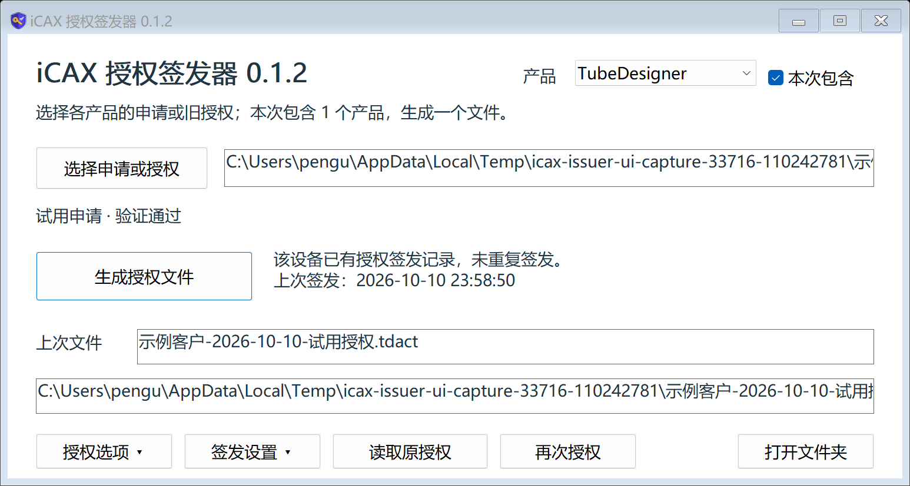

2026-10-28。签发程序交付目录：D:\penguinchinage0609\release\tubedesigner\授权签发。
iCAX-License-Issuer.exe，选择客户新导出的申请文件。普通“读取原授权”仍用于原文件重新导出或追加权限；追加试用权限保留原到期时间。“再次授权”是明确重新签发。永久授权不能改为试用。多产品文件保留其他产品。

上图使用合成测试文件展示界面，不是本次真实客户签发结果。
历史记录以设备与签名台账为依据，并验证授权文件内容。新导出文件额外保存签名路径凭据；即使文件后来丢失，记录的名称仍可显示。老记录没有路径时，只在申请附近有限查找并验证。找不到原文件时明确提示，不把签发库内部缓存的摘要文件名冒充客户文件名。
已核实这次设备的旧文件：TubeDesigner-2026-10-10T13-39-00-142Z.tdact，位于 D:\penguinchinage0609\release\tubedesigner\授权文件\客户申请，签发时间为 2026-10-10 23:58:50（北京时间）。
原 0.3.1 客户端不能识别明确重新签发的新授权步骤。0.3.2 安装包包含新版授权模块；继续使用原 0.3.1 时，也可用交付目录的“配套客户端更新”。其中的 TubeDesigner.dll 和更新脚本只针对本次核对过的 0.3.1 模块。关闭 TubeDesigner 后运行；脚本先核对旧模块、保存备份，再替换并校验新模块。遇到其他版本会停止，不强行覆盖。旧正式安装包未改动。
| 项目 | 覆盖 |
|---|---|
| 原生软件测试 | 七组通过；覆盖历史文件查找、丢失文件、签名凭据、试用重新计期、混合升级/重签链及多产品保留。 |
| 界面 | Win32 自测通过；上方截图已核对文件名、路径和按钮布局。 |
| Release 独立程序 | 真实启动并查询原生授权状态；强制授权有效，开发及 Release 绕过均关闭，重新签发支持已报告。 |
| 真实客户文件 | 只读校验旧文件与台账；本轮未给客户生成新授权。 |
| 硬件续期 | 新授权链使用隔离软件密钥验证。未在客户 TPM 上执行真实试用重新签发和导入，不能视为硬件验收。 |
签发器不包含私钥、口令或客户授权。原签发库继续使用原位置；备份需包含 native-ledger、native-upgrades、native-bundles 和新增的 native-exports。